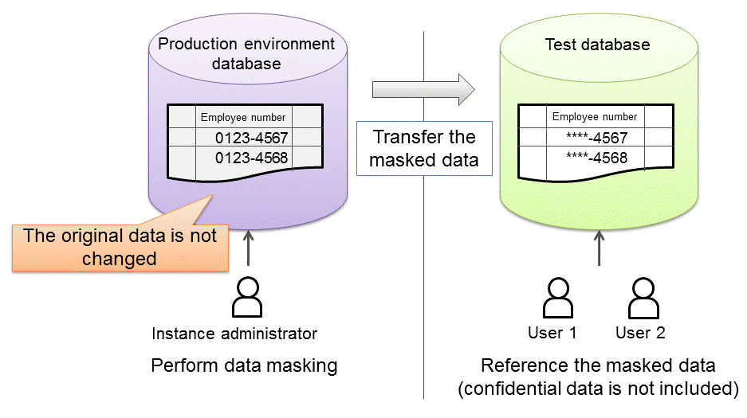

FUJITSU Enterprise Postgres provides a data masking feature that protects data to maintain security of data handled in systems.
The data masking feature changes the returned data for queries from applications and makes it available for reference without exposing the actual data.
For example, for a query of employee data, digits except the last four digits of an eight-digit employee number can be changed to "*" so that it can be used for reference.
Also, the data changed by the data masking feature can be transferred to a test database so that users who perform testing or development can reference the data. As production data should not be used in a test or development environment because of the risk of data leakage, this feature enables data that is similar to actual production data to be safely used in those environments.

See
Refer to "Data Masking" in the Operation Guide for information on data masking.